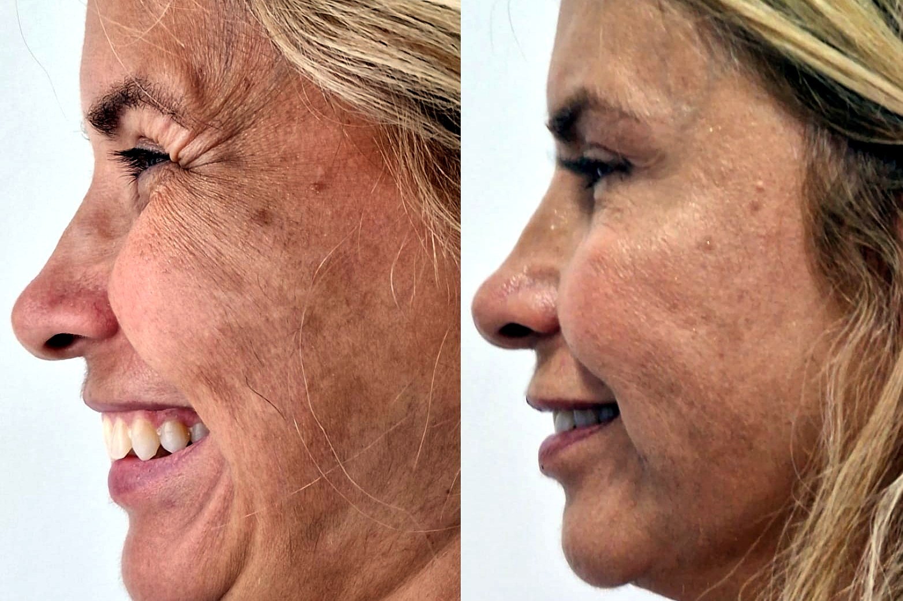
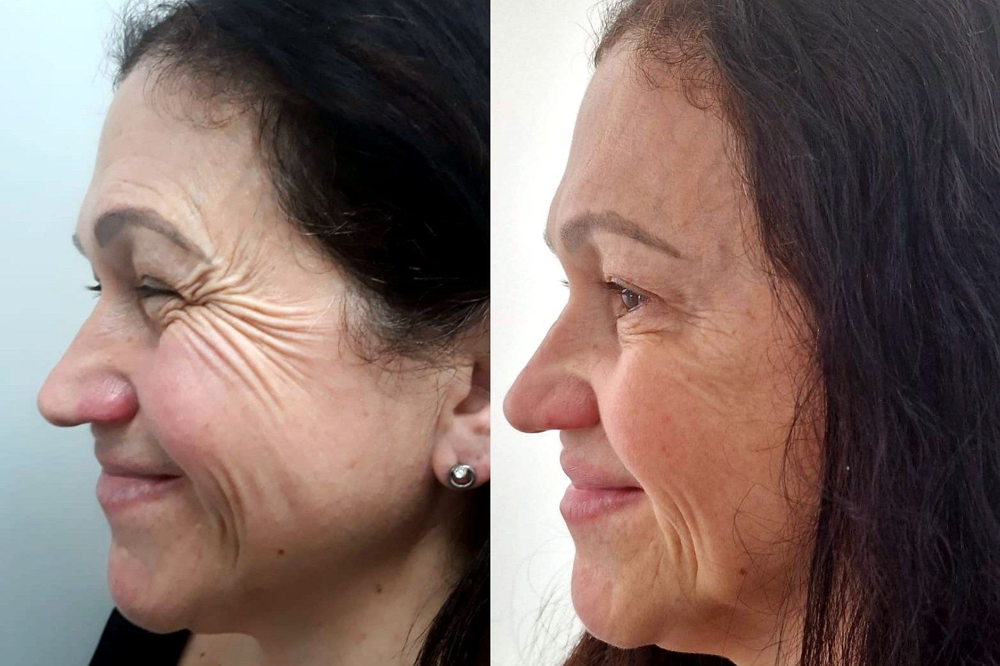
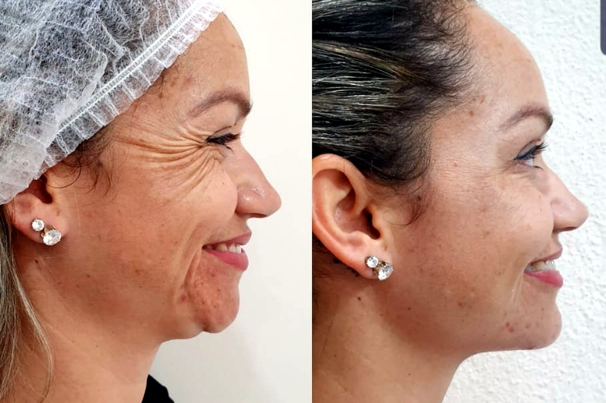
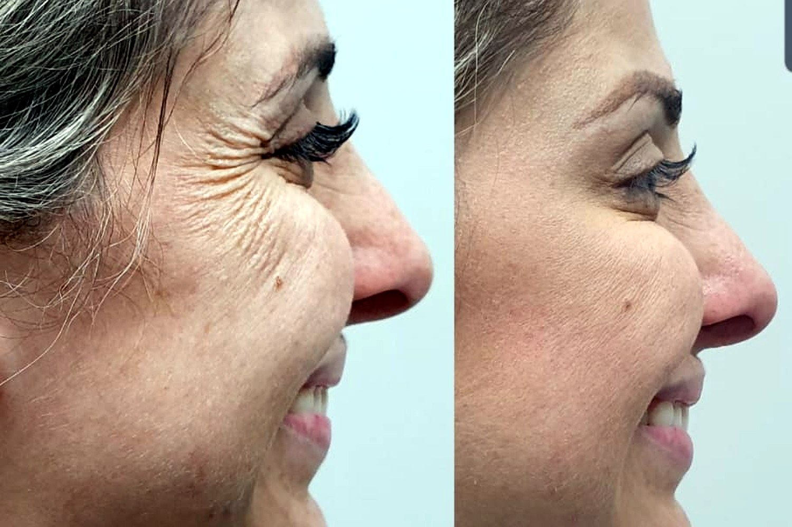

Botox MCP · Método Cláudia Pacheco · São Paulo · Belo Horizonte · Lisboa · Porto
OBotoxqueapagaocansaço—semcongelarasuaexpressão.
O Botox tradicional paralisa músculos com doses grandes em poucos pontos — e deixa aquele ar “feito”. O Botox MCP é outra coisa: micro-doses distribuídas pelo rosto inteiro, com uma seringa por cada aplicação — dose já medida, ponto a ponto, sem nunca depender de “apertar mais um bocadinho”. Suaviza as marcas e melhora a pele, mantendo intacto o seu jeito de sorrir.
Avaliação sem compromissoExpressão preservadaBrasil & Portugal · atendimento em português
[ Nome da paciente ]
Paciente · Lisboa
“Continuo a franzir a testa quando rio. Só que agora ninguém vê cansaço — vê a minha cara descansada.”
★★★★★
Expressão natural
1 seringa = 1 dose exacta
Role para entender a diferença
Botox MCP✦Uma seringa por aplicação✦Dose exacta✦Expressão viva✦Pele melhor✦Sem ar congelado✦
Botox MCP✦Uma seringa por aplicação✦Dose exacta✦Expressão viva✦Pele melhor✦Sem ar congelado✦
—O que ninguém lhe disse sobre o Botox
Se chegou até aqui, é provável que já tenha pensado no Botox — e logo a seguir tenha hesitado. Não por causa da agulha. Mas por causa daquela imagem na cabeça: a testa lisa demais, a sobrancelha parada, o sorriso que já não chega aos olhos. O ar de quem “fez”.
Esse medo é legítimo. E não é exagero seu: é o resultado real do Botox como quase sempre foi feito — doses grandes em três ou quatro pontos, com um único objetivo, paralisar o músculo. Funciona para tirar a ruga. E, no caminho, tira também um pouco de si.
Mas há aqui um equívoco que muda tudo: o problema nunca foi o Botox. Foi a forma antiga de o aplicar. Existe outra forma — e ela tem nome.
Antes de qualquer agulha
Nenhuma mulher quer parecer congelada. Quer parecer descansada, leve, ela mesma — só que sem o cansaço que o espelho insiste em mostrar.
O Botox tradicional paralisa✦O Botox MCP harmoniza✦Você continua você✦
O Botox tradicional paralisa✦O Botox MCP harmoniza✦Você continua você✦
01Uma categoria diferente — não um Botox “melhorado”
O Botox MCP não é um Botox melhor. É um Botox diferente.
Esta é a parte importante — e é fácil de perceber. O Botox tradicional tem um único trabalho: paralisar um músculo para apagar uma ruga. Por isso usa doses concentradas em poucos pontos, e por isso, quando passa do ponto, congela.
O Botox MCP parte de outra premissa: micro-doses muito mais pequenas, espalhadas por dezenas de pontos, aplicadas mais à superfície da pele. Não para paralisar — mas para suavizar marcas, fechar poros, controlar o brilho e dar um leve efeito de lifting, deixando o músculo livre para você continuar a expressar-se. Não é o mesmo procedimento feito melhor. É outro procedimento.
E é também outro nível de segurança: em vez de calcular a dose “a olho”, apertando a mesma seringa com mais ou menos força a cada ponto, o MCP usa uma seringa por aplicação, com a micro-dose já medida — precisão a sério, não estimativa.
O Botox de sempre
Paralisar para apagar
Doses grandes em 3 ou 4 pontos profundos
Dose “a olho”: a mesma seringa, apertada mais ou menos
Um aperto a mais e fica torto, assimétrico ou parado
Objetivo único: paralisar o músculo
Aquele ar “feito”, testa parada, sorriso preso
Trata a ruga — ignora a qualidade da pele
A nova oportunidade
Botox MCP
Micro-doses em dezenas de pontos superficiais
Uma seringa por aplicação: dose medida, ponto a ponto
Sem depender da força do polegar — simetria garantida pelo protocolo
Objetivo: harmonizar o rosto, não o congelar
Expressão preservada — você sorri, franze, vive
Suaviza marcas e melhora poros, brilho e textura
O mecanismo com nome próprio
Não é o Botox de toda a gente. É uma forma específica de o aplicar — sistematizada num protocolo com nome:
MCP
Método Cláudia Pacheco — protocolo de micro-Botox
Princípios inegociáveis — uma seringa por cada aplicação, micro-dose mapeada e expressão preservada — que transformam o mesmo activo de sempre num resultado que ninguém consegue apontar: um rosto descansado, não “feito”.
O nome MCP é também um lembrete: o método existe para que a dose nunca dependa da sorte.
02O mapa
No MCP, a diferença começa no mapa — não na agulha.
É exactamente aqui que o Botox MCP se separa do Botox de sempre. Antes de qualquer aplicação, o seu rosto é mapeado por inteiro: onde a pele pede textura, onde o músculo precisa de ceder só um pouco, onde um leve lifting muda tudo, e — sobretudo — quais os músculos que não se tocam, para a sua expressão ficar intacta.
São esses pontos que definem cada micro-dose. É por isso que duas mulheres nunca recebem o mesmo Botox MCP. O Botox tradicional aplica a mesma receita em toda a gente; o MCP aplica o mapa do seu rosto.
03Os quatro pilares do MCP
Quatro pilares que não funcionam separados.
É a presença das quatro coisas ao mesmo tempo que faz o Botox MCP ser Botox MCP — e não mais uma aplicação avulsa de toxina.
01
Uma seringa por aplicação
Errar é humano. Por isso o MCP não deixa o erro acontecer.
Há profissões em que um pequeno erro passa despercebido. Aplicar Botox não é uma delas — um milímetro a mais, uma dose a mais, e o rosto fica torto, assimétrico ou parado.
No Botox tradicional a dose é calculada à mão: aperta-se a mesma seringa com mais ou menos força, ponto a ponto, confiando na sensação dos dedos. Basta apertar um bocadinho a mais.
O MCP é um protocolo de segurança que tira esse risco da equação: uma seringa para cada aplicação, com a micro-dose já medida. A dose não depende da força do polegar — depende do protocolo. É isto que garante precisão, simetria e segurança para a sua saúde, em vez de depender da sorte.
02
Micro-dose espalhada
A diferença não está no produto. Está em como ele é distribuído.
O activo é o mesmo de sempre — o que muda é a engenharia. Em vez de doses grandes que paralisam, o MCP usa micro-doses muito pequenas, espalhadas por dezenas de pontos e aplicadas mais à superfície.
É essa distribuição — feita com a seringa certa em cada ponto — que suaviza a marca sem desligar o músculo. O segredo do ar “feito” nunca foi o Botox: foi a dose errada no sítio errado.
03
Expressão preservada
Tirar o cansaço sem tirar a sua cara.
Este é o pilar que define tudo. O objetivo nunca é congelar — é deixar você continuar a franzir, a sorrir, a levantar a sobrancelha. O Botox MCP trabalha o mínimo necessário para apagar o cansaço e o máximo possível para preservar a sua expressão.
É por isso que o resultado não grita “fiz Botox”. Sussurra apenas “andas com bom aspeto”. Ninguém aponta o que mudou, porque não há nada de artificial para apontar.
04
Pele de bónus
Não é só sobre rugas. É sobre a pele inteira.
Como as micro-doses são aplicadas à superfície, o Botox MCP faz o que o Botox tradicional não faz: melhora a qualidade da pele. Poros mais fechados, menos brilho, textura mais lisa, um glow discreto, um leve efeito de lifting no contorno.
Não é um efeito que aparece num dia e some no outro — constrói-se com manutenções espaçadas, ao longo do tempo, num rosto que envelhece bem em vez de parar no tempo.
✦A prova está à volta dos olhos
Pés de galinha: onde o Botox de sempre obriga você a escolher.
As rugas no canto dos olhos são as mais teimosas de todas — e não é por acaso. Elas nascem exactamente do mesmo músculo que faz você sorrir.
Por isso, à volta dos olhos, o Botox tradicional coloca-a perante uma escolha cruel: ou apaga a ruga, ou mantém o sorriso. Quase nunca os dois. É exactamente aqui que se vê a diferença entre um Botox “melhorado” e um Botox diferente.
O caminho antigo · mais dose
Apaga a ruga — e trava o sorriso
Para vencer um pé de galinha fundo, o Botox de sempre faz a única coisa que sabe: aumenta a dose e paralisa o músculo à volta do olho. A ruga até suaviza — mas o sorriso vai junto. O canto do olho deixa de enrugar quando você ri, o olhar fica parado, e nasce aquele ar “feito”.
Mais dose nunca foi a solução. Era o problema.
A nova oportunidade · outro mecanismo
Apaga a ruga — e guarda o sorriso
O Botox MCP não é o mesmo procedimento feito com mais cuidado. É outro mecanismo. Em vez de uma dose grande que desliga o músculo, mapeia o contorno do olho e aplica micro-doses precisas — medidas ao décimo, mais à superfície, onde a ruga realmente mora — sem tocar na força que faz você sorrir.
Dose ao décimo, não “a olho”: uma seringa por aplicação, com a micro-dose já medida ponto a ponto.
Trata a pele, não o sorriso: micro-doses superficiais suavizam a linha em repouso sem desligar o músculo que faz você rir.
Mapa antes da agulha: define-se que pontos do contorno tratar — e que músculos da expressão ficam intactos.
O resultado: o canto do olho descansado em repouso — e o pé de galinha de volta só quando você ri de verdade.
Resultados reais — pés de galinha suavizados, sorriso preservado
Repare no contorno do olho em cada par: a ruga funda em repouso suaviza — e, ainda assim, continua a ser o mesmo sorriso.
Foto de resultadoassets/resultados/olhos-1.jpg

AntesDepois
Foto de resultadoassets/resultados/olhos-2.jpg

AntesDepois
Foto de resultadoassets/resultados/olhos-3.jpg

AntesDepois
Foto de resultadoassets/resultados/olhos-4.jpg

AntesDepois
Imagens reais de pacientes, partilhadas com autorização. Cada rosto responde de forma diferente — os resultados variam de pessoa para pessoa.
Quer saber se o Botox MCP faz sentido para o seu rosto?
Retrato — Dra. CláudiaFoto humana e próxima (consultório ou ambiente real), não posada de banco de imagens.
O MCP nasceu de um incómodo que eu não conseguia ignorar.
[ Espaço para a história em primeira pessoa — a “ponte de epifania”. A Dra. Cláudia conta o momento que a fez recusar o Botox congelante: o que via de errado nos resultados “feitos” → o desconforto de paralisar rostos → a virada (perceber que micro-doses bem mapeadas faziam o oposto) → como sistematizou isto no Método Cláudia Pacheco. Pessoal, honesto e específico — uma história real convence mais do que uma lista de títulos. ]
O que aprendi foi simples: o Botox nunca foi o problema. O problema era usá-lo para paralisar em vez de harmonizar. Quando inverti essa lógica — uma seringa por aplicação, micro-dose mapeada, expressão preservada — deixei de ouvir “está diferente” e passei a ouvir “está descansada”. Foi aí que o MCP virou método: um protocolo que me impede de errar a dose por apertar a seringa um pouco a mais.
05Por que confiar este rosto a mim
Formação que não para no diploma.
Micro-Botox bem feito é técnica fina: a diferença entre um rosto descansado e um rosto parado está em milímetros e em micro-doses. Por isso a atualização constante não é troféu de parede — é o que garante que o Botox MCP aplicado em si é o que há de mais seguro e atual, e não o que se fazia há dez anos.
Foto — Harvard / formaçõesFormação e congressos recentes em toxina e estética facial.
Harvard
Formação internacional [ curso e ano a confirmar ]
0+
anos a aplicar toxina botulínica [ a confirmar ]
0+
formações e congressos nos últimos anos [ a confirmar ]
0
protocolo próprio — o Método Cláudia Pacheco
06Imagine daqui a um mês
Não a sua versão “congelada”. A sua versão descansada.
Você acorda, olha-se ao espelho e a primeira coisa que vê não é o cansaço — é você. A testa continua a mexer-se quando ri. A pele tem um brilho que não estava lá. E os elogios chegam vagos: “andas com bom aspeto”, “estás diferente, não sei bem o quê”. Ninguém adivinha que fez Botox, porque não há nada de “feito” para adivinhar.
Esse é o objetivo do MCP. Não um rosto novo. O seu rosto num bom dia — todos os dias.
07Mulheres que já fizeram a troca
Resultados que falam baixo — e pacientes que falam por si.
Vídeo — depoimento de pacienteProva social em vídeo: uma paciente a mexer livremente o rosto e a falar da experiência. 30–60s convertem melhor.
“Tinha pavor de ficar com cara de máscara. Foi o oposto — continuo eu, só que descansada.”
[ Nome ]
Paciente · [ cidade ]
“O que mais me surpreendeu não foram as rugas. Foi a pele — os poros, o brilho. Parece outra pele.”
[ Nome ]
Paciente · [ cidade ]
“Já tinha feito Botox antes e odiei a testa parada. O MCP é mesmo outra coisa.”
[ Nome ]
Paciente · [ cidade ]
“Vim do Brasil, não conhecia ninguém. A Dra. explicou tudo antes de tocar na agulha. Confiei — e valeu.”
[ Nome ]
Paciente · [ cidade ]
Atenção regulatória — rever antes de publicar. A publicidade a actos médicos e a toxina botulínica tem restrições no Brasil (CFM / CRO / Anvisa) e em Portugal (Ordem dos Médicos / Entidade Reguladora da Saúde / INFARMED) — “antes e depois” e promessas de resultado costumam não ser permitidos a público frio. Os depoimentos acima são exemplos a substituir por testemunhos reais e autorizados, sem promessa de resultado. Valide tudo com assessoria jurídica/clínica em cada país antes de publicar.
08Uma palavra honesta, de mulher para mulher
Você costuma ficar por último.
Cuida da casa, dos filhos, do trabalho, de todos — e o seu espelho fica para “quando der”. Talvez tenha recomeçado a vida noutro país, longe da família, a provar o seu valor outra vez. E no meio disso tudo, cuidar de si soa a luxo, a vaidade, a “depois”.
Mas há uma verdade simples: quando você se olha e gosta do que vê, a sua energia muda — e quem você ama sente isso. Cuidar de si não é tirar de ninguém. É a forma mais honesta de ter mais de si para dar.
09Honestidade primeiro
O Botox MCP não é para toda a gente — e tudo bem.
É para si se…
Quer suavizar o cansaço sem perder a sua expressão.
Já recusou o Botox por medo do ar “congelado”.
Liga tanto à pele (poros, brilho, textura) como às rugas.
Quer um resultado discreto, que ninguém consiga apontar.
Provavelmente não é se…
Quer a testa completamente “lisa” e parada.
Procura o preço mais baixo acima de tudo o resto.
Espera uma transformação dramática num único dia.
Prefere não saber o que é aplicado no seu rosto.
10Sobre adiar
A vontade de se cuidar nasce num instante — e dissolve-se no dia a dia.
As urgências dos outros chegam sempre primeiro. O que você queria para si fica para a próxima semana, depois para o mês seguinte. Quando se dá conta, passou mais um ano e o espelho diz a mesma coisa.
Não há aqui pressão artificial nem “oferta que expira à meia-noite”. Há apenas dois factos: a agenda de avaliações MCP é limitada — cada rosto leva tempo a mapear bem — e a melhora da sua pele começa no dia em que você começa. Quanto antes, mais cedo se reconhece ao espelho.
11O primeiro passo
Tudo começa na avaliação MCP — o passo de menor compromisso.
Na avaliação, a Dra. Cláudia mapeia o seu rosto, entende o que a incomoda e o que você não quer mudar, e explica — sem pressão e sem jargão — se o Botox MCP faz sentido para si, quantos pontos, e o que esperar.
Mostra também como funciona o protocolo de segurança: uma seringa por cada aplicação, com a dose já medida. Honesta inclusive sobre quando a resposta é “ainda não precisa”.
PASSO 01
Mapa do rosto
Lemos a sua pele, a sua expressão e o que faz sentido tratar — e o que não.
PASSO 02
Plano claro
Os pontos, as micro-doses e o valor — explicados antes de qualquer decisão.
PASSO 03
Você decide
Sem obrigação de fazer nada na hora. O passo seguinte é sempre seu.
Sai com uma leitura honesta do seu próprio rosto e da sua pele.
Entende o protocolo de segurança — uma seringa por aplicação, dose medida.
Um plano com valores transparentes — mesmo que a recomendação seja esperar.
[ Ligar ao destino real: agendamento online ou WhatsApp pré-preenchido — rotear por cidade: Brasil (São Paulo · Belo Horizonte) e Portugal (Lisboa · Porto). ]
12Ainda tem dúvidas?
Perguntas que costumam vir antes da primeira avaliação.
É exactamente o que o Botox MCP foi pensado para evitar. Como usa micro-doses superficiais em vez de doses grandes que paralisam, você continua a franzir, sorrir e expressar-se. O objetivo é tirar o cansaço, nunca a sua expressão.
O Botox tradicional usa poucas doses grandes para paralisar um músculo e apagar uma ruga. O MCP usa muitas micro-doses espalhadas e mais à superfície, para harmonizar o rosto e melhorar a pele (poros, brilho, textura, leve lifting) sem desligar a expressão. Não é o mesmo procedimento “melhorado” — é outro procedimento.
É o coração do método. Cada aplicação tem a sua própria seringa, com a micro-dose já medida — a dose não é calculada “a olho”, apertando mais ou menos o êmbolo da mesma seringa, como costuma acontecer no Botox tradicional. Ao tirar o fator “força do dedo” da equação, tira-se a principal causa de assimetria, de excesso de dose e de risco para a saúde. Errar é humano; o MCP é o protocolo que impede o erro de acontecer.
São micro-picadas muito superficiais, geralmente bem toleradas. Pode haver pequenos pontos avermelhados que passam em horas. Na avaliação tudo é explicado para o seu caso — incluindo cuidados antes e depois.
Como as doses são menores e o foco é a continuidade da pele, costuma trabalhar-se com manutenções espaçadas em vez de um único “antes e depois”. A periodicidade certa para si é definida na avaliação.
Sim — e muitas pacientes chegam exactamente assim, depois de não terem gostado do efeito parado. Na avaliação mapeamos o seu rosto do zero e desenhamos o plano MCP adequado a si.
Depende de quantos pontos e do que faz sentido para o seu rosto — por isso a avaliação vem primeiro. Nela recebe um plano com valores transparentes, explicados antes de qualquer decisão, sem surpresas e sem pacotes empurrados. [ Opcional: indicar o valor da avaliação em EUR. ]
No Brasil, em São Paulo e Belo Horizonte; em Portugal, em Lisboa e Porto. [ Detalhar moradas, agenda e canais de contacto de cada cidade. ]
Com todo o gosto. Boa parte das pacientes são mulheres que recomeçaram a vida em Portugal — e a Dra. Cláudia atende nos dois países. O atendimento é em português, próximo e sem julgamentos. [ Detalhar localização e agenda. ]
13Uma nota pessoal
Se chegou até aqui, é porque algo nisto fez sentido.
Não vou prometer que vou mudar a sua vida — seria desonesto, e eu própria desconfio de quem promete. O que posso prometer é isto: não vou congelar o seu rosto. Vou mapeá-lo com cuidado, usar uma seringa para cada aplicação com a dose já medida — para que nada fique torto, assimétrico ou dependente da sorte — e ser franca consigo sobre o que o Botox MCP pode (e não pode) fazer por si.
O resto é decisão sua, no seu tempo. Sem pressão, sem cardápio fixo, sem promessas vazias.
Dra. Cláudia Pacheco
P.S. Se ficou só com uma dúvida — “será que vou ficar natural?” — não deixe que ela a faça adiar mais um ano. Mande a mensagem. Responder a dúvidas faz parte do meu trabalho, mesmo que decida não marcar nada.
Toda boa decisão começa com uma boa pergunta
Vamos conversar sobre o seu rosto?
Sem formulário longo, sem compromisso — só uma conversa para perceber se o Botox MCP é para si.